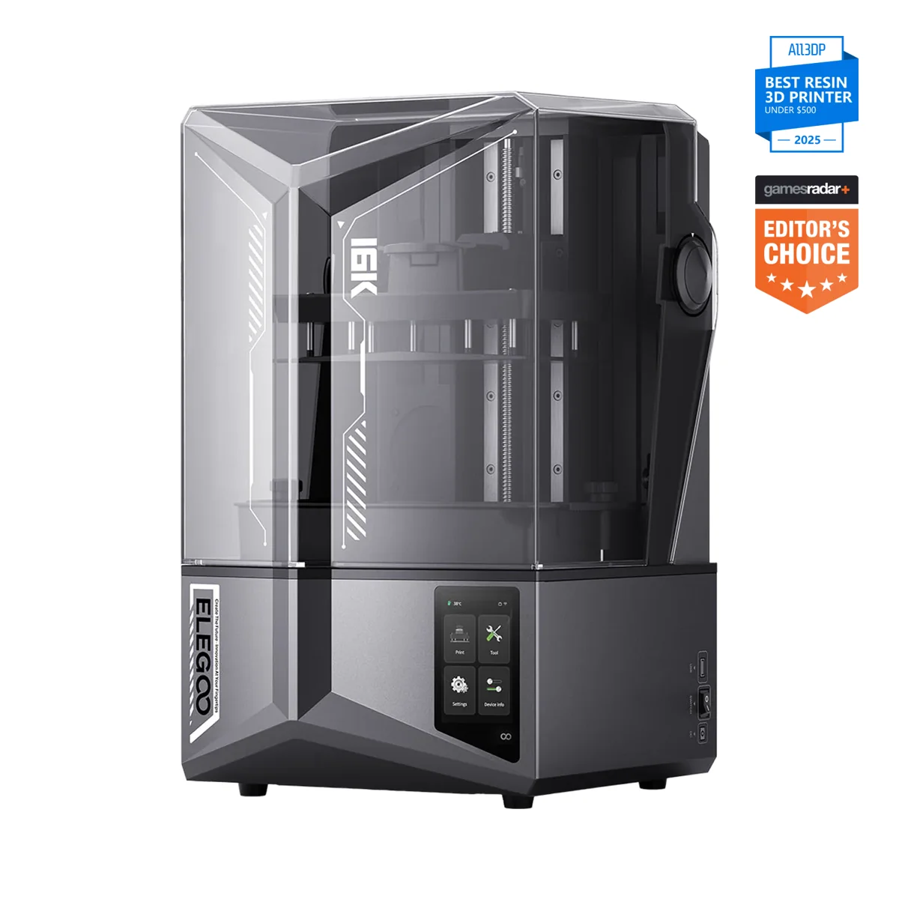

Build volume
211.68 x 118.37 x 220 mm
Advertised dimensions; check usable space and variants.
Sources & dates
- Elegoo Saturn 4 Ultra 16K product page (technical data and description) · 2026-08 · vendor
10-inch 16K MSLA printer with tilt-release, a Fresnel-collimated COB engine, a heated tank and an AI camera.

211.68 x 118.37 x 220 mm
Advertised dimensions; check usable space and variants.
10-inch 16K monochrome masking LCD, 15120 x 6230 px, XY pixel pitch 14 x 19 um (manufacturer specification)
Published resin-display specification.
$649.99 in us.elegoo.com's live Shopify product JSON, in stock, with compare_at_price also $649.99 — no discount active at the time of checking (Aug 2026)
Dated listing, not a live offer. Read the configuration and region.
Understand the hardware, explore compatible changes and find a diagnostic starting point when something goes wrong. Expand the specification sections for every recorded value, condition and original reference.
Dimensions, construction and the hardware that moves the print.
| Property and unit | Published value and conditions | Sources and dates |
|---|---|---|
| Manufacturer & exact marketed model name (verify the exact product identity first) | Elegoo Saturn 4 Ultra 16K. Elegoo's product handle is saturn-4-ultra-16k-10inch-monochrome-lcd-resin-3d-printer. 3DJake item number ELG-50.101.038300 | 2 sources
|
| Street price (USD; dated snapshot per entry) | $649.99 in us.elegoo.com's live Shopify product JSON, in stock, with compare_at_price also $649.99 — no discount active at the time of checking (Aug 2026) | 1 source
|
| Variants & sibling models — and how to tell them apart (spec-contamination risk) | Distinct from the earlier Saturn 4 Ultra (12K); the 16K carries a 15120 x 6230 masking LCD with 14 x 19 um pixels. Elegoo also sells it bundled with a Mercury Plus V2.0 wash/cure station and as a pre-owned SKU, neither of which is the printer-only price | 2 sources
|
| Property and unit | Published value and conditions | Sources and dates |
|---|---|---|
| Build volume X×Y×Z (mm) — advertised vs actually usable | 211.68 x 118.37 x 220 mm | 1 source
|
| Machine footprint (mm) & clearance needed (cable/spool overhang) | 327.4 x 329.2 x 548 mm | 1 source
|
| Frame construction & material | Metal housing with a flip-up cover and a drip guard | 1 source
|
| Enclosure: open / enclosed; panel material; door/lid | Flip-up lid (Elegoo's own naming) over an open frame; UV-blocking cover | 1 source
|
| Property and unit | Published value and conditions | Sources and dates |
|---|---|---|
| Kinematics (bedslinger i3 / CoreXY / other) | MSLA with tilt-release: the vat tilts to peel each layer rather than pulling straight up. Elegoo claims the mechanism cuts curing time by 25%. Single Z axis, Z precision 0.02 mm | 1 source
|
Extrusion, heating, leveling and material handling.
| Property and unit | Published value and conditions | Sources and dates |
|---|---|---|
| Auto bed leveling: probe technology (inductive / strain gauge / load cell / touch probe) | Automatic levelling, plus intelligent mechanical sensor alarms | 1 source
|
| Property and unit | Published value and conditions | Sources and dates |
|---|---|---|
| Officially supported filament list | 405 nm photopolymer resin; the heated tank is aimed at high-viscosity and high-speed resins. No closed compatibility list published | 1 source
|
For the heating error, the official sequence checks damaged or blocked tank contacts, film interference, board connection and contact cleanliness, then circuit continuity. It distinguishes replacing the tank from replacing the heating adapter board based on those tests.
Applies to: Saturn 4 Ultra 16K heated tank and its adapter board; do not transfer the contact arrangement to the unheated Saturn 4 Ultra.
Before investigating release noise, ELEGOO checks the tank for failed-print fragments. Its diagnostic sequence also considers resin temperature, model cross-section, exposure and release-wait settings, rather than assuming that the tilt mechanism has failed.
Applies to: Mars 5 Ultra and Saturn 4 Ultra/16K are named by the source; use settings for the actual resin and printer.
| Property and unit | Published value and conditions | Sources and dates |
|---|---|---|
| Masking LCD | 10-inch 16K monochrome masking LCD, 15120 x 6230 px, XY pixel pitch 14 x 19 um (manufacturer specification) | 2 sources
|
| Light source | COB light source with a Fresnel collimating lens | 1 source
|
| Light uniformity & intensity | Light energy at the plate quoted as 5 mW/cm2, i.e. 5000 uW/cm2 (manufacturer claim, attributed to the tilt-release and Fresnel optics). No uniformity percentage published and no independent measurement | 1 source
|
| Vertical print speed (mm/h) | Up to 150 mm/h (manufacturer claim). Elegoo does not state the layer height or resin type the figure assumes | 1 source
|
| Release film | PFA release film. No rated life published | 1 source
|
| LCD life & replaceability | Masking LCD shielded by tempered 9H protective glass. Elegoo publishes no rated screen life in hours and does not state user replaceability | 1 source
|
| Resin vat & feeding | Replaceable resin vat with a dual pour spout and a drip guard. Heated tank with automatic temperature measurement: Elegoo states resin reaches 25 C in 26 minutes from a 5 C ambient at 50% humidity (manufacturer figure). Capacity not published; no auto-refill | 1 source
|
Firmware, controls, connections and calibration.
| Property and unit | Published value and conditions | Sources and dates |
|---|---|---|
| Input voltage (110/220 V, switch or auto) | 100-240 V, 50/60 Hz, 24 V 6 A | 1 source
|
| Property and unit | Published value and conditions | Sources and dates |
|---|---|---|
| Firmware base & current version (Klipper fork / Marlin fork / proprietary) | Elegoo EL3D-4.0 system. Slicer is CHITUBOX | 1 source
|
| Property and unit | Published value and conditions | Sources and dates |
|---|---|---|
| Display: size, type, touch? | 4-inch capacitive touchscreen (control panel — not the masking LCD, see W1) | 1 source
|
| WiFi (band/standard), Ethernet, USB ports, SD/flash-drive | USB and Wi-Fi, with WLAN file transfer | 1 source
|
| Camera: built-in / optional? Resolution & framerate (verify — marketing often omits real fps) | AI camera, 1920 x 1080 | 1 source
|
| Camera features: live monitor, timelapse, AI failure detection (spaghetti detection) — how real is it? | AI camera with print-failure detection | 1 source
|
This guide presents the catalog’s sourced record for this exact model. Source dates belong to each reference; a page update does not mean every specification has been rechecked.
Prices are dated listing snapshots, with configuration, regional and sale conditions. They are not current offers. Unknown values remain unfilled.
Firmware, variants and available accessories can change. Read the original reference before making a purchase or planning a process.
Firmware, modifications and troubleshooting links are checked against the model and stated hardware or firmware revision. A creator’s compatibility claim is not a fit test by this site. Official troubleshooting describes a diagnostic route; individual reports do not establish a failure rate.
This review did not verify firmware customization or update guidance, printable modifications, hardware upgrades for this exact model. That is a research gap, not a claim that none exist.